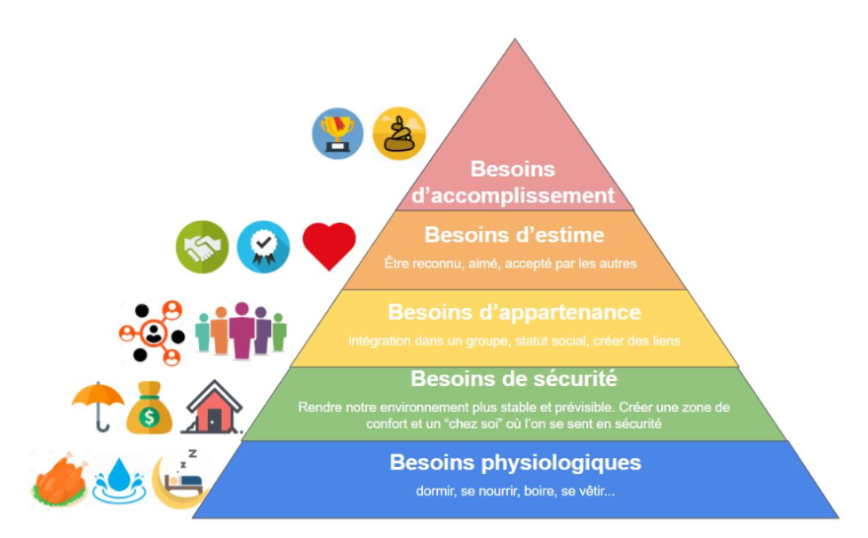

Aceptation
social
Estime de soit
Résumé
Quand on pense à une addiction, dans la plupart des cas, on imagine des situations extrêmes, mais on peut aussi être addict aux achats en ligne. Cette addiction aura des conséquences sur notre économie personnelle, mais également sur la vision que nous avons de nous-mêmes.
Source
A: pour Amazon et addiction
Quand on pense à une addiction, dans notre tête on voit une des poudres blanches, de l’alcool, une cigarette… Mais dans notre entourage, on peut retrouver beaucoup d'addictions pas “classiques”. Par exemple le sucre ou les réseaux sociaux. Mais peut-on devenir addict aux achats en ligne ? Pour déterminer qu’une personne est addict à quelque chose, il faut que cette activité affecte négativement sa vie dans trois aspects principaux pendant au moins six mois.
Biologie : Cette action t'empêche-t-elle de vivre ta vie “normale” ? Est-ce qu’elle t’a fait arrêter des activités que tu faisais normalement ? Dans le contexte des achats en ligne, on pourrait retrouver le cas d’une personne qui reste collée à son téléphone pour chercher la meilleure réduction.
Psychologie: Est-ce que mon cerveau ne pense qu’à ça ? Dans ce cas, on pourrait retrouver le profil d’une personne qui pense constamment à voir les nouveaux produits/réductions dans une application.
Social : Quand une activité empêche une personne de se relationner avec des gens, cela l’isole dans un monde. Dans le cas de l’e-commerce, on peut retrouver l’exemple d'Uber Eats qui permet de rester chez soi (isolement social) au lieu de sortir manger dans un restaurant.
Le problème du mot "addiction", c’est qu’on pense immédiatement aux activités qui tuent notre corps de manière directe (comme fumer un produit stupéfiant, qui peut provoquer une surdose). Donc, on ne voit pas quand on est addict à quelque chose qui ne pose pas un danger de mort immédiat. Cela rend les autres addictions plus difficiles à accepter. Le terme “acheteur compulsif” est un terme employé de façon très commune, mais c’est un simple synonyme d’"addict aux achats". Le problème, c’est qu’on retrouve une négation qui nous empêche de voir le problème.
Un des plus grands dangers, c’est que la limite entre un utilisateur “normal” et une personne addict aux achats en ligne est très fine. Cela veut dire que des utilisateurs normaux peuvent facilement la dépasser et devenir addicts en un clin d’œil. Une fois que tu es addict à ça, c’est vraiment difficile de le voir. Tu n’as pas de détérioration de ton corps, et les réelles conséquences sont à long terme.
Une conséquence principale d’être addict aux achats en ligne, c’est la santé économique, qui peut être durement affectée si nos achats sont réguliers. Évidemment, la limite va dépendre de la santé économique de chacun. D’autre part, le fait de tout faire via des achats en ligne limite nos relations sociales. Pour comprendre ce dégât, il faut connaître la pyramide de Maslow.
Quand on fait des sorties, que ce soit pour faire du shopping ou pour manger dans un restaurant, on satisfait le niveau d’appartenance de la pyramide de Maslow. Quand on fait ces activités en ligne, on affaiblit les piliers qui constituent ce besoin. Les achats en ligne ne vont pas effondrer ces niveaux, mais si on ajoute d'autres aspects comme les réseaux sociaux ou les jeux vidéo en ligne, on peut se retrouver dans un monde où ce besoin est moins accompli.
Quand le besoin d’appartenance n’est plus respecté, cela voudrait dire que tous les besoins au-dessus de lui ne le seront plus. Les personnes concernées ne pourraient plus ressentir l’accomplissement de leur besoin d’estime et d’accomplissement. Cela va générer un vide chez les personnes concernées, ou dans la société entière si de nombreuses personnes sont impliquées.
L’addiction aux achats en ligne est réelle et dangereuse. On peut facilement franchir la ligne entre un acheteur normal et un addict. Le pire, c’est que, comme vu dans les deux autres articles, les applications sont conçues pour nous pousser à faire de plus en plus d’achats. Pour cette raison, je crois qu’il est nécessaire de créer des lois ayant pour but de défendre l’utilisateur, pour éviter qu’il tombe dans ces pièges et devienne addict, pour le bien de chaque individu mais aussi pour le bien de la sociabilité du monde.
